- The famous Murphy's Law says:
- Anything that can
possibly go wrong,
does.
(Wikipedia page on Murphy's Law click here )
- Anything that can
possibly go wrong,
does.
- What can go wrong in
a computer program:
- We can update the wrong information/variable....
- What can we do to
reduce the
likelihood that we
update a wrong variable:
- Limit the accessibility of a variable
- Consider the following
2 programs:
Program "Scope1" Program "Scope2" public class Scope1 { public static void main(String[] args) { double r; r = 3.14; System.out.println(r); } }public class Scope2 { public static void main(String[] args) { { double r; r = 3.14; } System.out.println(r); } }The only difference is we put the definition of the variable r inside a block in Program "Scope2"
- When we compile the
2 programs, we get
completely different
results:
- The program "Scope1.java"
compiles with no errors
- The program "Scope2.java" results in the following
error:
Scope2.java:11: cannot find symbol symbol : variable r location: class Scope2 System.out.println(r); ^ 1 error
-
The Java compiler is telling us that:
there is
no variable r
defined when it
tried to
translate the
statement
System.out.println(r);Look at the program Scope2.java:
public class Scope2 { public static void main(String[] args) { { double r; <---- We DID define a variable r here r = 3.14; } System.out.println(r); <--- How come the Java compiler can't find it ? } }
- The program "Scope1.java"
compiles with no errors
- Example Program:
(Try it out yourself !)

- Prog file Scope1.java: click here
- Prog file Scope2.java: click here
How to run the program:
- Right click on the links and
save in a scratch directory
- To compile:
javac Scope1.java
and
javac Scope2.java
(No need to run the programs, just look at the error message)
- Explanation of this behavior:
- The access of the variable r was limited to the block in which it was defined !!!
That is why the variable r is not accessible in program Scope2.java:
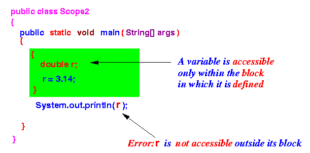 On the other hand, the variable r is accessible in program Scope1.java:
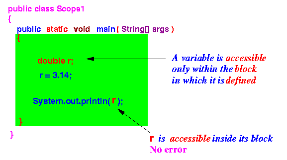
- Scope
- Scope of a variable = the region in the program where the variable is accessible
- Factors that determine the
scope of a variable:
- When is the
variable
created
(a variable must
exist before
it can be accessible)
- When is the
variable
destroyed
(a variable that has been
destroyed is
not accessible)
- Between the 2 location above, the scope of a variable is further limited by the block in which it is defined
- When is the
variable
created
(a variable must
exist before
it can be accessible)
- Example 1: scope of the variable
r in
program Scope2.java

- Example 2: scope of the variable
r in
progtram Scope1.java
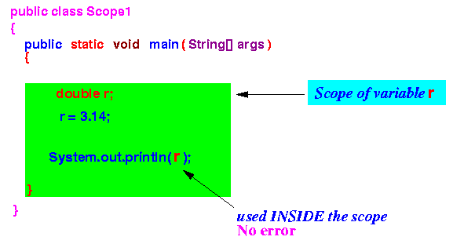
- Consider the following program:
public class Scope3 { public static void main(String[] args) { { r = 1; // (1) double r; r = r + 5; // (2) } r = r + 2; // (3) } r = r + 3; // (4) }Questions:
- Which of the statements marked (1), (2), (3) and (4) will cause an error ?
Answers:
- (1) causes error because the variable r has not yet been defined (i.e., uses the variable r outside its scope)
- (2) --- no error
- (3) causes error because the scope of variable r has ended (i.e., uses the variable r outside its scope)
- (4) causes error because the statement is not contained inside a method !
- Recall that:
- Scope of a variable = the region in the program where the variable is accessible
- To avoid confusion,
Java (in fact, every programming language)
imposes the follow rule:
- You cannot define different variables with the same name inside the same scope
Example: this is not allowed
public class Scope7 { public static void main(String[] args) { /* ------------------------------------------- 2 variables named r inside the SAME scope ------------------------------------------- */ double r = 0.0; int r = 0; // Error ! System.out.println(r); } }
- Example Program:
(Demo above code)
- Prog file: click here
How to run the program:
- Right click on link and
save in a scratch directory
- To compile: javac Scope07.java
Error message:
Scope7.java:10: r is already defined in main(java.lang.String[]) int r = 0; ^ 1 error
- Fact:
- A scope are delimited by a pair of (matching) braces { .... }
Multiple pairs of braces can form 2 configurations
- Possible configurations of
multiple (matching) pairs
of braces { .... }:
- Configuration 1:
non-overlapping
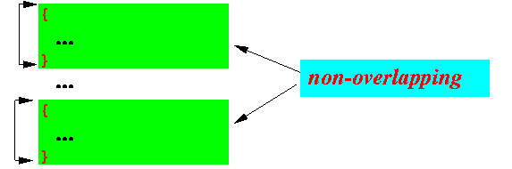 The order of the braces are:
- The sequence must start with an open brace {
- The next brace is
a
closed brace
} that
matches the
first open brace
- Then the next brace must be an open brace {
- The sequence must end with an closed brace } (matching the second open brace)
- Configuration 2:
nested
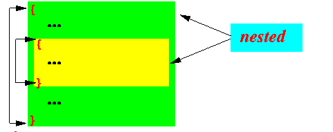 The order of the braces are:
- The sequence
must start with an
open brace
{
- The next brace is another open brace {
- Then the next brace
must be an
closed brace
}
which matches the
second open brace
- The sequence must end with an closed brace } (which now matches the first open brace)
- The sequence
must start with an
open brace
{
There are no other possible configuration
- Configuration 1:
non-overlapping
- Disjoint scopes
- Disjoint scopes = 2 or more scopes that do not overlap with each other
Example: the following 2 blocks create disjoint (non-overlapping) scopes
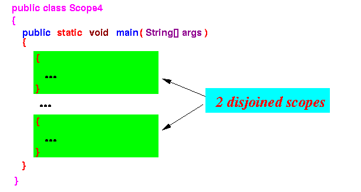
- Interesting phenomenon in disjoint scopes:
- You can define different variables with the same name in disjoint scopes
Example:
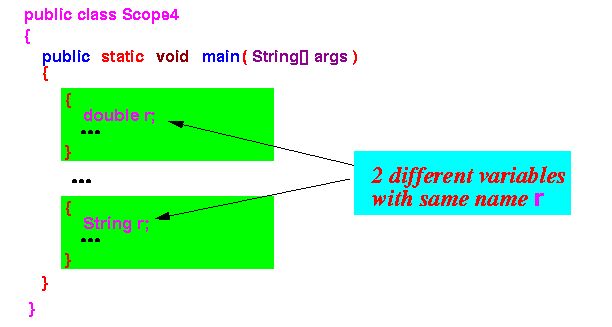
- Proof the
2 variables named r
are in fact different variables:
- We can show this fact with
the effect of the
+ operation:
- The + operation performed on a double typed data will perform an add operation
- The + operation performed on a String typed data will perform an concatenation operation
Programming proof that the 2 variables with name r are different variables:
public class Scope4 { public static void main(String[] args) { { double r = 3.14; r = r + 5; // + = add operation System.out.println(r); } { String r = "3.14"; r = r + 5; // + = concatenation System.out.println(r); } } }Output of program:
8.14 (addition of 3.14 + 5) 3.145 (concatenation of "3.14" + "5")
- We can show this fact with
the effect of the
+ operation:
- Example Program:
(Demo above code)
- Prog file: click here
How to run the program:
- Right click on link and
save in a scratch directory
- To compile: javac Scope4.java
- To run: java Scope4
- Nested scopes
- Nested scopes = 2 or more scopes where do one scope is contained in the other
Example: the following 2 blocks create a nested scopes
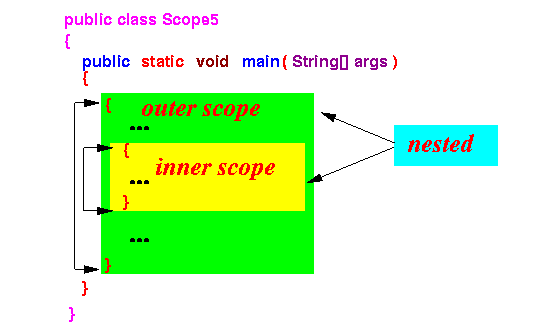 The enclosing block forms the outer scope
The enclosed block forms the inner scope
- Scoping rule for nested scopes:
- A variable that is defined at location x in an outer scope is accessible in all inner scopes following location x
Example:
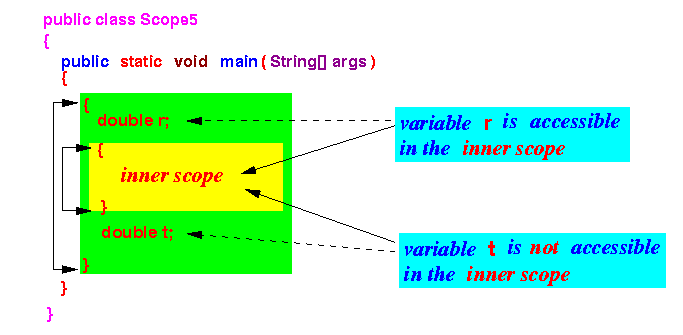
- Detailed explanation:
- Why the
variable r is
accessible in the
inner scope:
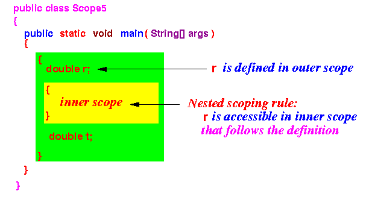
- Why the
variable t is
not accessible in the
inner scope:
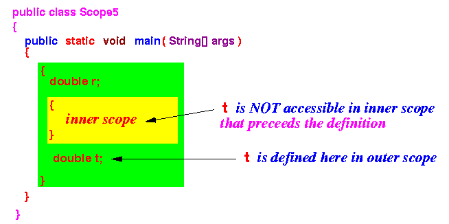
- Why the
variable r is
accessible in the
inner scope:
- Program to illustrate the nested scope rule:
public class Scope5 { public static void main(String[] args) { { double r = 3.14; { r = 5; // No error t = 5; // Will cause "undefined variable" error } double t = 1.0; } } }
- Example Program:
(Demo above code)
- Prog file: click here
How to run the program:
- Right click on link and
save in a scratch directory
- To compile:
javac Scope5.java
(Watch for the error message)
- Consider the following
2 variables definitions:
public class Scope6 { public static void main(String[] args) { { // Start of outer scope double r; { // Start of inner scope String r; ... } } } }The first definition of the variable r takes places inside the outer scope
The second definition of the variable with the same name r takes places inside the inner scope
- From what we have learned above,
the first variable r
is also accessible
inside the
inner scope
- Therefore, there are
2 different variables
with the same name (r)
inside the
inner scope
Houston, we have a problem...
- From what we have learned above,
the first variable r
is also accessible
inside the
inner scope
- $64,000 question:
- Is this allowed ?
Answer:
- The answer to this question is:
depends on the choice
made by the designer of
the programming language
- The designer of the
Java programming language believes
that this is confusing and
has decided that
this construct is not allowed in
Java
- Other programming languages (C/C++) allows it (but we will not go into the details in class - if you are interested, send me an email)
- Note:
- This situation is
not covered by the
rule that:
- You cannot define
different variables with
the same name inside
the same scope
(See: click here)
- You cannot define
different variables with
the same name inside
the same scope
- The reason is the fact that
the inner scope and
the outer scope are
different scopes
Why ? Well, the inner scope and the outer scope have different boundaries !!!
So this situation is not covered by the above rule !
- This situation is
not covered by the
rule that:
- What will be printed by each of the print statements:
public class Exercise1 { public static void main(String[] args) { { double r = 3.14; { String s = "1234"; r = r + 2; System.out.println( s + r ); } { int s = 1234; System.out.println( s + r ); } } } }Answer:
12345.14 1239.14
- Example Program:
(Demo above code)
- Prog file: click here
How to run the program:
- Right click on link and
save in a scratch directory
- To compile: javac Exercise1.java
- To run: java Exercise1
- Does the following program has any errors:
public class ScopeX { public static void main(String[] args) { { String r = "abc" ; System.out.println(r); } double r = 4.0; System.out.println(r); } }Does it violate the rule:
- You cannot define two variables with the same name in the same scope ???
Answer:
- No, because:
- String r is
allowed because:
public class ScopeX { public static void main(String[] args) { { String r = "abc" ; // There is no variable r defined YET !!! // So: only 1 variable named r in scope System.out.println(r); } double r = 4.0; System.out.println(r); } }
- double r is
allowed because:
public class ScopeX { public static void main(String[] args) { { String r = "abc" ; System.out.println(r); } double r = 4.0; // The variable "String r"'s scope has ENDED ! // So this variable r is the ONLY variable // by that name System.out.println(r); } }
- String r is
allowed because:
- Example Program:
(Demo above code - try it out yourself !)
- Prog file: click here
How to run the program:
- Right click on link and
save in a scratch directory
- To compile: javac ScopeX.java
- To run: java ScopeX